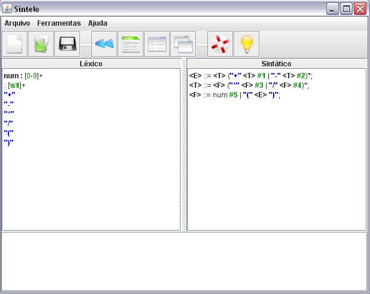
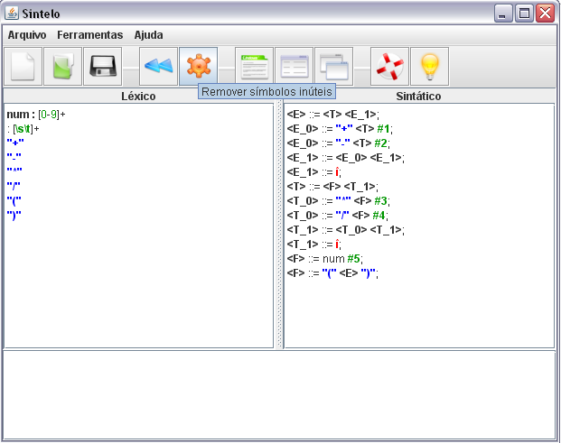

Voltar Índice
Voltar Índice
REMOVER SÍMBOLOS INÚTEIS
Para fazer a remoção dos símbolos inúteis o usuário deverá declarar as especificações sintáticas, não é obrigatório declarar as especificações léxicas.

Depois o usuário irá selecionar o ícone ou ir em “Ferramentas” e “Remover símbolos inúteis”.

O software mostrará a gramática transformada. Na simulação da Análise Sintática LL(1) não é necessário fazer a remoção dos símbolos inúteis antes, pois o software fará isso automaticamente.